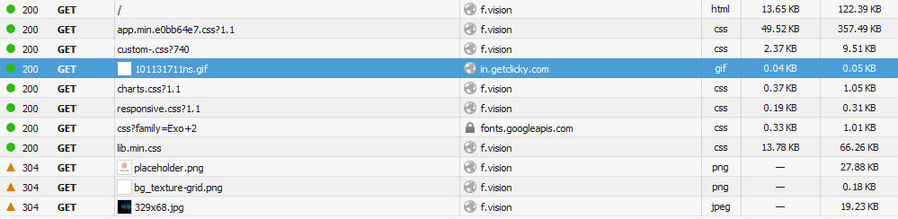
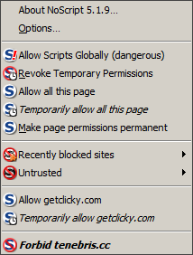

Sphere Browser
Sphere Browser é um navegador web focado em privacidade feito pela Tenebris
Nível de Spyware: Possivelmente Spyware
Este programa foi testado com MITMProxy no Linux. O próprio Sphere Browser não contém nenhuma telemetria e realmente removeu todos os spywares da base de código do Chromium em que se baseia. No entanto, ele tem duas Red Flags - a página inicial padrão possui análises e você precisa executar análises em seu navegador para fazer o download. O software é limpo. Apenas as configurações e a maneira como você precisa baixá-lo e a falta de código-fonte impedem o título de "Não é Spyware". Você pode configurá-lo facilmente para não se conectar à página inicial padrão, pelo menos.
Pixel de rastreamento na página inicial padrão
O Sphere Browser é baseado em um recurso de "indentidades" que permite alterar a aparência do navegador para o resto da Internet de uma maneira bastante fácil - e, por padrão carrega o site f.vision que pode identificar sua nova identidade de maneira bastante centralizada e até inclui um pixel de rastreamento do serviço de análise getclicky. Se você quiser usar este navegador, você realmente não deveria usar esta página inicial padrão. Ele contrasta muito mal com os recursos de privacidade do navegador.

JavaScript de uma empresa do Google Analytics no site de download
Outro problema é que você precisa carregar o JavaScript para baixar o próprio navegador em sphere.tenebris.cc/, que tentar carregar o código JS do Tenebris, bem como o JavaScript da mesma empresa de análise que tem o pixel de rastreamento em f.vision. Por que essas análises estão aqui se o navegador está tão focado em privacidade?

Este artigo foi editado pela última vez em 12/12/2018
Esta é uma tradução do artigo em Inglês. Pode estar desatualizado. Compare as datas em ambos os artigos.
Se você quiser editar este artigo, ou contribuir com seu(s) próprio(s) artigo(s), visite-nos no repositório git no Codeberg.
Todas as contribuições devem ser licenciadas sob a licença CC0 para serem aceitas.

Back to catalog